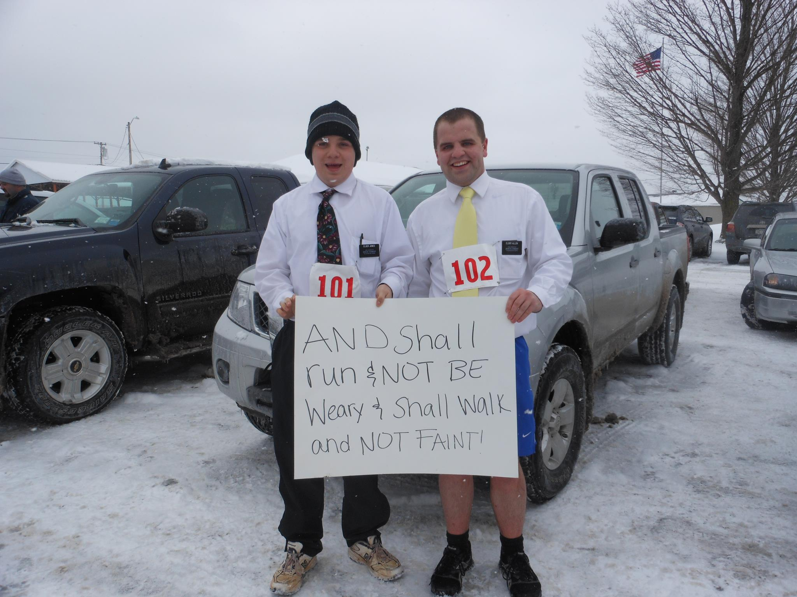

Hello, I'm William, I am currently studying Computer Science at Brigham Young University in Provo Utah. I am also minoring in History as well as in Mathematics. I lived in the United Kingdom until I was eleven and I then moved to central Virginia. I helped my family raise free range pigs grown and raised in the forest and then go and sell them at farmers markets all across Virginia and Maryland for my family's business Forest Fed Pork. Every Saturday morning I would get up at 5:30 and drive several hours to go and sell pork. I graduated high school in 2012 with an associate’s degree through a dual enrollment program that my high school did with Southside Virginia Community College. I participated in this program for my junior and senior years of high school and it helped me to advance my high school education as much as I could. I served a two year mission for the Church of Jesus Christ of Latter Day Saints in Rochester, located in Western New York. I choose to major in Computer Science because I love learning about and playing with technology, and I love being able to create programs that can help better the world. I also enjoy the thrill of solving the puzzle that so often ends up being the case when programming.
